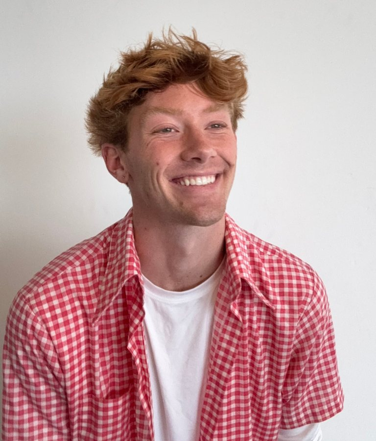

I design products people actually want to use, then figure out how to tell the world about them.
click a bubble to zoom in · or grab a marker up top and draw
Designer. Strategist. Builder.
I'm interested in why people do what they do, what makes them connect with things, and how a good idea becomes something real. I designed my own major at Claremont McKenna, bringing together human-centered design, psychology, environmental studies, technology, and storytelling.
I've worked across startups, beauty, outdoor recreation, and beverage, moving between research, branding, product development, and business strategy. I've built prototypes, developed marketing campaigns, explored new materials, designed customer experiences, and built AI-powered tools to make businesses work better. I like getting involved in the whole process, from figuring out the problem to putting something out into the world.
I'm especially drawn to the space between creativity and practicality. I love a strong brand, a well-designed product, a clever business model, and the little details that make an experience feel different. I'm usually thinking about how things could be better, more interesting, or done entirely differently.
Outside of work, you'll probably find me somewhere in the mountains, on a river, sketching out a new idea, or convincing someone we should build something. I'm happiest when I'm learning, making things, and working with people who aren't afraid to try something new.
I keep designing trucks. A NovaBlonde glam van, a green jobs truck. I think it's because my answer to "how do we reach people?" is usually "go to where they already are."

Looking for product marketing and go-to-market roles at startups that move fast. San Francisco or New York.
I'm always happy to talk shop, products, or how to make a messy idea feel obvious.
jacksjpeg@gmail.com